Finite Element Model - Matlab Toolbox
Table of Contents
- 1. Import Flexible Elements in Simscape using Component Mode Synthesis in Ansys
- 2. Low Order Dynamical Model from a Finite Element Model
- 3. Functions
- 3.1.
extractMatrix: Extract Mass/Stiffness matrices - 3.2.
extractNodes: Extract Nodes positions and Interfaces DoFs - 3.3.
extractEigs: Extract Eigen Values and Eigen Vectors - 3.4.
normalizeEigs: Normalize Eigen Vectors - 3.5.
reductionInOut: Reduce the Modal matrix to some nodes - 3.6.
computeModalDamping- Compute the Damping - 3.7.
sortModes- Sort Modes - 3.8.
reduceModes- Get Modes numbers for the reduced model - 3.9.
createStateSpaceModel- Create the Reduced State Space Model
- 3.1.
This small toolbox provides a set of functions to help using flexible elements on Simscape from a Finite Element Software.
The functions are all described in section 3.
Few examples are provided in the following sections.
1 Import Flexible Elements in Simscape using Component Mode Synthesis in Ansys
In this section, we wish to model a simple flexible cantilever beam using Simscape.
The cantilever beam is first defined in Ansys. The reduced Mass and Stiffness matrices are then exported using the Component Mode Synthesis.
The coordinates of interface nodes (nodes where forces can be applied, displacements measured, and connections with other elements) are also exported.
First, these information are imported in Matlab, and then are used in Simscape to model the flexible element.
1.1 Import Mass Matrix, Stiffness Matrix, and Interface Nodes Coordinates
We first extract the stiffness matrix.
K = extractMatrix('cant_beam_K.txt');
| 42000.0 | 0.0 | 0.0 | 0.0 | 0.0 | 0.0 | -42000.0 | 0.0 | 0.0 | 0.0 |
| 0.0 | 17.0 | 0.0 | 0.0 | 0.0 | 4200.0 | 0.0 | -17.0 | 0.0 | 0.0 |
| 0.0 | 0.0 | 17.0 | 0.0 | -4200.0 | 0.0 | 0.0 | 0.0 | -17.0 | 0.0 |
| 0.0 | 0.0 | 0.0 | 230000.0 | 0.0 | 0.0 | 0.0 | 0.0 | 0.0 | -230000.0 |
| 0.0 | 0.0 | -4200.0 | 0.0 | 1400000.0 | 0.0 | 0.0 | 0.0 | 4200.0 | 0.0 |
| 0.0 | 4200.0 | 0.0 | 0.0 | 0.0 | 1400000.0 | 0.0 | -4200.0 | 0.0 | 0.0 |
| -42000.0 | 0.0 | 0.0 | 0.0 | 0.0 | 0.0 | 84000.0 | 0.0 | 0.0 | 0.0 |
| 0.0 | -17.0 | 0.0 | 0.0 | 0.0 | -4200.0 | 0.0 | 34.0 | 0.0 | 0.0 |
| 0.0 | 0.0 | -17.0 | 0.0 | 4200.0 | 0.0 | 0.0 | 0.0 | 34.0 | 0.0 |
| 0.0 | 0.0 | 0.0 | -230000.0 | 0.0 | 0.0 | 0.0 | 0.0 | 0.0 | 460000.0 |
M = extractMatrix('cant_beam_M.txt');
| 0.00013 | 0.0 | 0.0 | 0.0 | 0.0 | 0.0 | 6.5e-05 | 0.0 | 0.0 | 0.0 |
| 0.0 | 0.00014 | 0.0 | 0.0 | 0.0 | 0.01 | 0.0 | 5e-05 | 0.0 | 0.0 |
| 0.0 | 0.0 | 0.00014 | 0.0 | -0.01 | 0.0 | 0.0 | 0.0 | 5e-05 | 0.0 |
| 0.0 | 0.0 | 0.0 | 0.0022 | 0.0 | 0.0 | 0.0 | 0.0 | 0.0 | 0.0011 |
| 0.0 | 0.0 | -0.01 | 0.0 | 0.93 | 0.0 | 0.0 | 0.0 | -0.006 | 0.0 |
| 0.0 | 0.01 | 0.0 | 0.0 | 0.0 | 0.93 | 0.0 | 0.006 | 0.0 | 0.0 |
| 6.5e-05 | 0.0 | 0.0 | 0.0 | 0.0 | 0.0 | 0.00026 | 0.0 | 0.0 | 0.0 |
| 0.0 | 5e-05 | 0.0 | 0.0 | 0.0 | 0.006 | 0.0 | 0.00029 | 0.0 | 0.0 |
| 0.0 | 0.0 | 5e-05 | 0.0 | -0.006 | 0.0 | 0.0 | 0.0 | 0.00029 | 0.0 |
| 0.0 | 0.0 | 0.0 | 0.0011 | 0.0 | 0.0 | 0.0 | 0.0 | 0.0 | 0.0043 |
Then, we extract the coordinates of the interface nodes.
[int_xyz, int_i] = extractNodes('cant_beam.txt');
| Node Number | x | y | z |
|---|---|---|---|
| 1 | 0 | 0 | 0 |
| 6 | 500 | 0 | 0 |
| 22 | 1000 | 0 | 0 |
Using K, M and int_xyz, we can use the Reduced Order Flexible Solid simscape block.
1.2 Identification of the Dynamics
The flexible element is imported using the Reduced Order Flexible Solid simscape block.
The beginning of the cantilever beam is fixed to the World frame, a force actuator is added in the z direction on the middle node, and a z-displacement sensor is added at the end of the beam.
The dynamics is identified from the applied force to the measured displacement (Figure 1).
%% Name of the Simulink File mdl = 'cant_beam'; %% Input/Output definition clear io; io_i = 1; io(io_i) = linio([mdl, '/F'], 1, 'openinput'); io_i = io_i + 1; io(io_i) = linio([mdl, '/z'], 1, 'openoutput'); io_i = io_i + 1; G = linearize(mdl, io);
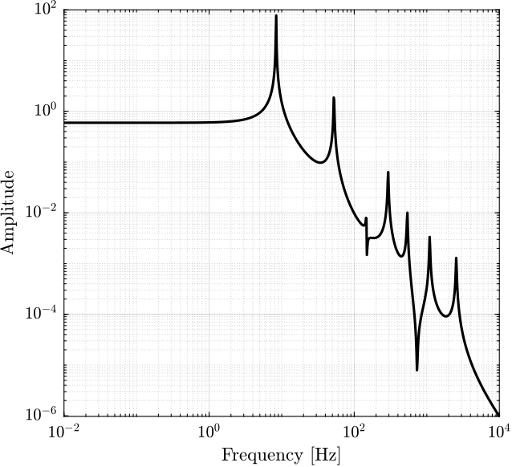
Figure 1: Identify transfer function from a vertical force applied at the middle point of the cantilever beam to its vertical displacement
2 Low Order Dynamical Model from a Finite Element Model
Most of the example presented in this section are taken from hatch00_vibrat_matlab_ansys.
The goal is to obtain a low order model from a Finite Element Model.
We suppose here that the eigenvalues and eigenvectors are exported using a Finite Element software.
Once the eigenvalues and eigenvectors are imported, one should choose the inputs and outputs nodes (e.g. where the forces and the displacements are measured) to first reduce the number of eigenvectors.
Damping can then be added to each.
Then, in order to reduce the size of the model, only few modes are included in the model. The selection of the modes to keep in the model can be based on the “dc gain” or “peak gain” method depending on the damping.
Finally, the full model and reduced models are compared.
2.1 Extract Eigenvalues and Eigenvectors
The eigenvalues and eigenvectors are extracted.
[xn, f0] = extractEigs('cantbeam30bl.eig', 'dirs', [1 0 0 0 0 0]');
n_nodes = size(xn, 1);
n_modes = size(xn, 2);
2.2 Define Physical Inputs and Outputs
First, define the node numbers corresponding to the inputs and outputs
i_input = 14; % middle of the beam i_output = 29; % end of the beam
2.3 Define Damping
We here use uniform damping.
xi = 0.01;
2.4 All Modes Included in the Model
The state space matrices are created by “inspection”. Here, we include all the modes.
System Matrix - A
Adiag = zeros(2*n_modes,1); Adiag(2:2:end) = -2*xi.*(2*pi*f0); Adiagsup = zeros(2*n_modes-1,1); Adiagsup(1:2:end) = 1; Adiaginf = zeros(2*n_modes-1,1); Adiaginf(1:2:end) = -(2*pi*f0).^2; A = diag(Adiag) + diag(Adiagsup, 1) + diag(Adiaginf, -1);
System Matrix - B
B = zeros(2*n_modes, length(i_input));
for i = 1:length(i_input)
% Physical Coordinates
Fp = zeros(n_nodes, 1);
Fp(i_input(i)) = 1;
B(2:2:end, i) = xn'*Fp;
end
System Matrix - C
C = zeros(length(i_output), 2*n_modes); C(:, 1:2:end) = xn(i_output, :);
System Matrix - D
D = zeros(length(i_output), length(i_input));
State Space Model
G_f = ss(A, B, C, D);
2.5 Simple mode truncation
Let see what happens is we simply truncate the number of modes (keeping only the low frequency modes).
The frequency of the modes are shown in Figure 2.
The DC gain of each mode is shown in Figure 3.
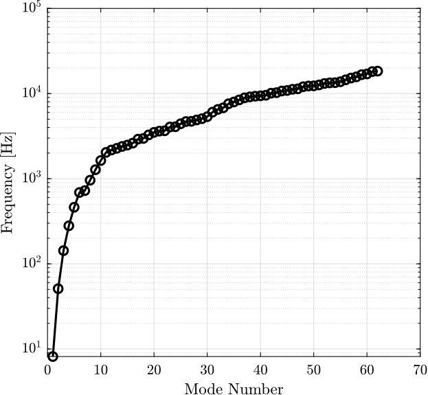
Figure 2: Frequency of the modes
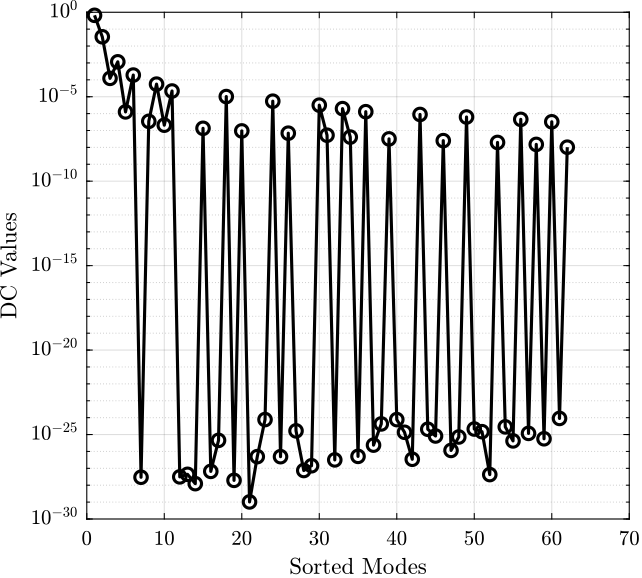
Figure 3: Unsorted DC Gains
Let’s keep only the first 10 modes.
m_max = 10; xn_t = xn(:, 1:m_max); f0_t = f0(1:m_max);
And create the state space model with the kept modes:
2.6 Modes sorted by their DC gain
Let’s sort the modes by their DC gains and plot their sorted DC gains (Figure 4).
dc_gain = abs(xn(i_input, :).*xn(i_output, :))./(2*pi*f0).^2; [dc_gain_sort, index_sort] = sort(dc_gain, 'descend');
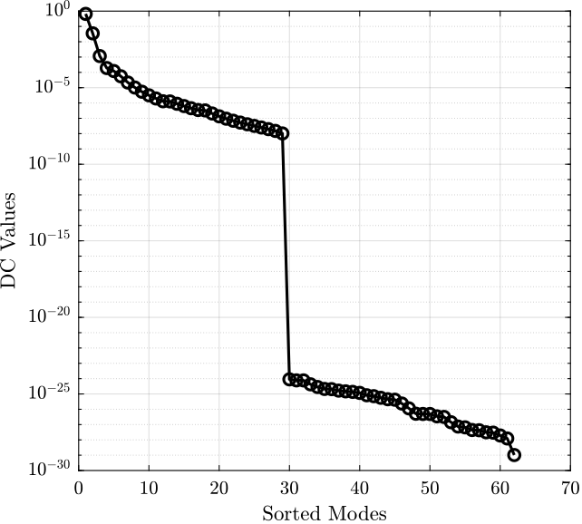
Figure 4: Sorted DC Gains
Let’s keep only the first 10 sorted modes.
m_max = 10; xn_s = xn(:, index_sort(1:m_max)); f0_s = f0(index_sort(1:m_max));
And create the state space model with the kept modes:
G_s = ss(A, B, C, D);
2.7 Comparison
The following models are compared on Figure 5:
- full model containing all the modes
- the truncated model containing only the low frequency modes
- the model where modes are sorted based on DC gain before selection
One can see that with the same number of modes, the sorted model gives much better results than the truncated one.
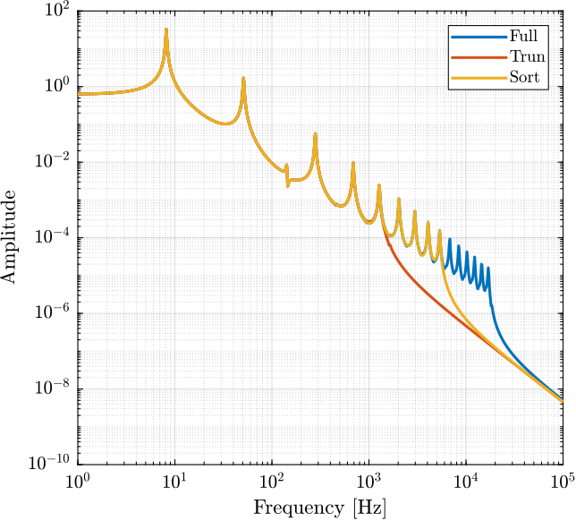
Figure 5: Comparison of the reduction techniques
2.8 Effect of the Individual Modes
To see why it is better to sort the modes prior mode reduction, we can look at the contribution of the individual modes as shown in Figure 6.
One can see that some modes have no effect on the dynamics for the selected inputs and outputs.
freqs = logspace(0, 4, 1000);
figure;
hold on;
for mode_i = 1:10
A = zeros(2);
A(2,2) = -2*xi.*(2*pi*f0(mode_i));
A(1,2) = 1;
A(2,1) = -(2*pi*f0(mode_i)).^2;
B = [0; xn(i_input, mode_i)'];
C = [xn(i_output, mode_i), 0];
D = zeros(length(i_output), length(i_input));
plot(freqs, abs(squeeze(freqresp(ss(A,B,C,D), freqs, 'Hz'))), ...
'DisplayName', sprintf('Mode %i', mode_i));
end
plot(freqs, abs(squeeze(freqresp(G_f, freqs, 'Hz'))), 'k--', ...
'DisplayName', 'Full');
set(gca, 'XScale', 'log'); set(gca, 'YScale', 'log');
ylabel('Amplitude'); xlabel('Frequency [Hz]');
ylim([1e-9, 1e2]);
legend('location', 'southwest');
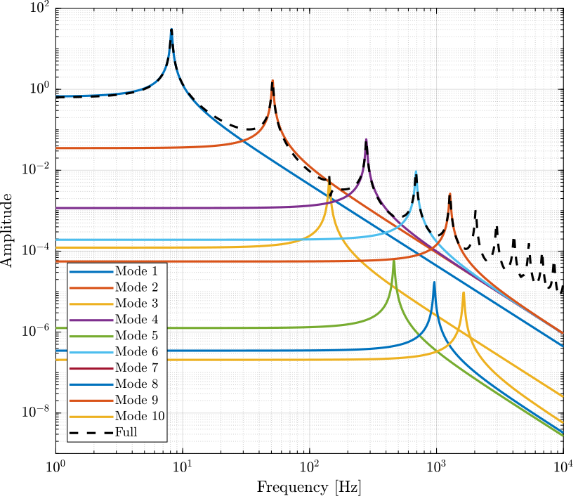
Figure 6: Contribution of the individual modes on the dynamics
2.9 Non-Uniform Damping
2.9.1 Definition of the Damping
Let’s say we want to use Rayleigh damping:
\begin{equation} \xi_i = \frac{a + b \omega_i^2}{\omega_i} \end{equation}We define the parameters on Matlab:
a = 1e-2; b = 1e-6; xi = (a + b * (2*pi*f0).^2)./(2*pi*f0);
2.9.2 State Space Model
And we can create the state space model.
System Matrix - A
Adiag = zeros(2*n_modes,1); Adiag(2:2:end) = -2*xi.*(2*pi*f0); Adiagsup = zeros(2*n_modes-1,1); Adiagsup(1:2:end) = 1; Adiaginf = zeros(2*n_modes-1,1); Adiaginf(1:2:end) = -(2*pi*f0).^2; A = diag(Adiag) + diag(Adiagsup, 1) + diag(Adiaginf, -1);
System Matrix - B
B = zeros(2*n_modes, length(i_input));
for i = 1:length(i_input)
% Physical Coordinates
Fp = zeros(n_nodes, 1);
Fp(i_input(i)) = 1;
B(2:2:end, i) = xn'*Fp;
end
System Matrix - C
C = zeros(length(i_output), 2*n_modes); C(:, 1:2:end) = xn(i_output, :);
System Matrix - D
D = zeros(length(i_output), length(i_input));
State Space Model
G_d = ss(A, B, C, D);
2.9.3 Obtained Dynamics
And we compare the obtained dynamics when using Uniform Damping (Figure 7).
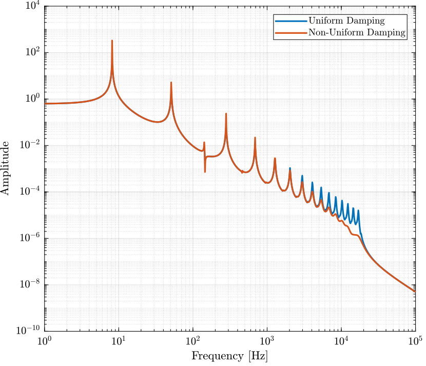
Figure 7: Comparison of the obtained dynamics with uniform damping and non-uniform damping
2.9.4 Sort Modes based on their peak gain
The modes are sorted by their peak gain. The obtained sorted peak gains for each mode are shown in figure 8.
dc_gain = abs(xn(i_input, :).*xn(i_output, :))./(2*pi*f0).^2; peak_gain = dc_gain./xi; [peak_gain_sort, index_sort] = sort(peak_gain, 'descend');
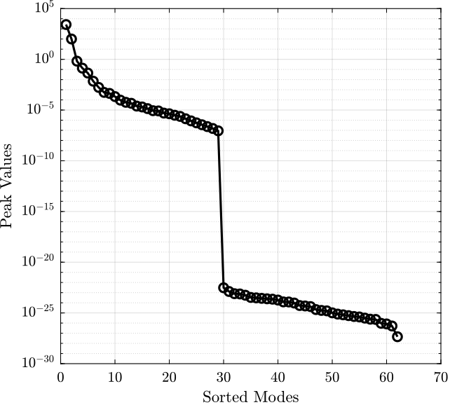
Figure 8: Sorted Peak Gains
2.9.5 Model Reduction
Let’s keep only the first 10 sorted modes.
m_max = 10; xn_s = xn(:, index_sort(1:m_max)); f0_s = f0(index_sort(1:m_max)); xi_s = xi(index_sort(1:m_max));
And we create the state space matrices.
Adiag = zeros(2*m_max,1); Adiag(2:2:end) = -2*xi_s.*(2*pi*f0_s); Adiagsup = zeros(2*m_max-1,1); Adiagsup(1:2:end) = 1; Adiaginf = zeros(2*m_max-1,1); Adiaginf(1:2:end) = -(2*pi*f0_s).^2; A = diag(Adiag) + diag(Adiagsup, 1) + diag(Adiaginf, -1);
B = zeros(2*m_max, length(i_input));
for i = 1:length(i_input)
% Physical Coordinates
Fp = zeros(n_nodes, 1);
Fp(i_input(i)) = 1;
B(2:2:end, i) = xn_s'*Fp;
end
C = zeros(length(i_output), 2*m_max); C(:, 1:2:end) = xn_s(i_output, :);
D = zeros(length(i_output), length(i_input));
And finally the reduced State Space Model is created and compared with the full model in Figure 9.
G_p = ss(A, B, C, D);
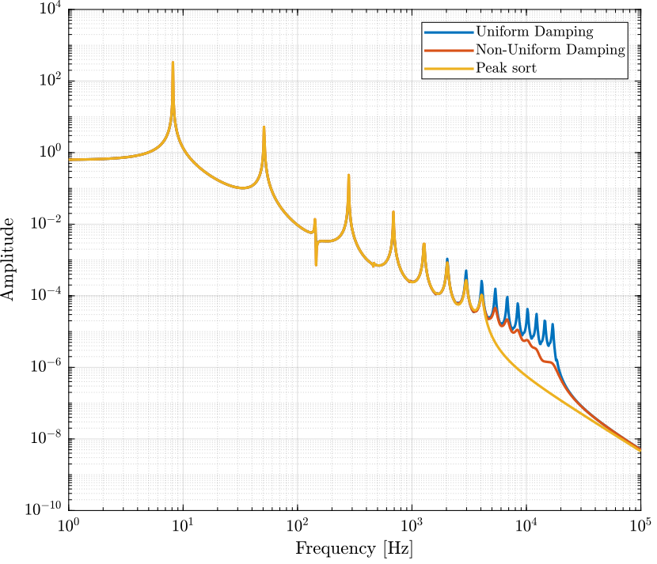
Figure 9: Comparison of the full and reduced model for the non-uniform damping case
2.10 MIMO System
When using multiple inputs and multiple outputs, one cannot simply choose the modes to keep based on their gains because this gain depends on the inputs and outputs chosen.
In such case, balancing reduction should be used.
2.10.1 Inputs and Outputs
Let’s choose two inputs and two outputs.
i_input = [14, 31]; i_output = [14, 31];
2.10.2 Full Model
The state space matrices are created by inspection.
Adiag = zeros(2*n_modes,1); Adiag(2:2:end) = -2*xi.*(2*pi*f0); Adiagsup = zeros(2*n_modes-1,1); Adiagsup(1:2:end) = 1; Adiaginf = zeros(2*n_modes-1,1); Adiaginf(1:2:end) = -(2*pi*f0).^2; A = diag(Adiag) + diag(Adiagsup, 1) + diag(Adiaginf, -1);
B = zeros(2*n_modes, length(i_input));
for i = 1:length(i_input)
% Physical Coordinates
Fp = zeros(n_nodes, 1);
Fp(i_input(i)) = 1;
B(2:2:end, i) = xn'*Fp;
end
C = zeros(length(i_output), 2*n_modes); C(:, 1:2:end) = xn(i_output, :);
D = zeros(length(i_output), length(i_input));
And the State Space Model is created.
G_m = ss(A, B, C, D);
2.10.3 Balancing Reduction
First, we have to make sure that the rigid body mode is not included in the system (here it is not).
Then, we compute the controllability and observability gramians.
wc = gram(G_m, 'c'); wo = gram(G_m, 'o');
And we plot the diagonal terms of the controllability and observability gramians (Figure 10). The states representing the position and velocity are separated.
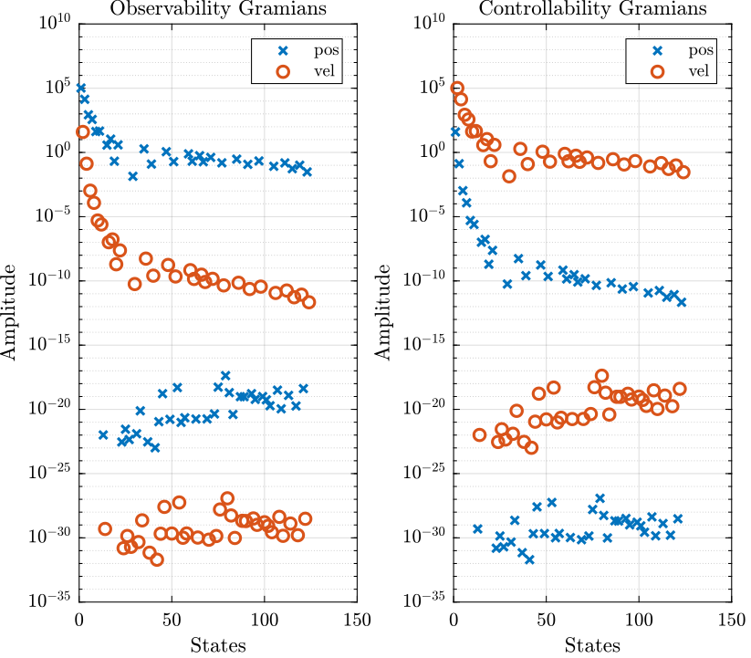
Figure 10: Diagonal values of the Observability and Controllability Gramians
We use balreal to rank oscillatory states.
[SYSB,G] = BALREAL(SYS) computes a balanced state-space realization for the stable portion of the linear system SYS. For stable systems, SYSB is an equivalent realization for which the controllability and observability Gramians are equal and diagonal, their diagonal entries forming the vector G of Hankel singular values. Small entries in G indicate states that can be removed to simplify the model (use MODRED to reduce the model order).
[G_b, G, T, Ti] = balreal(G_m);
The diagonal values of the two gramians are shown in Figure 11.
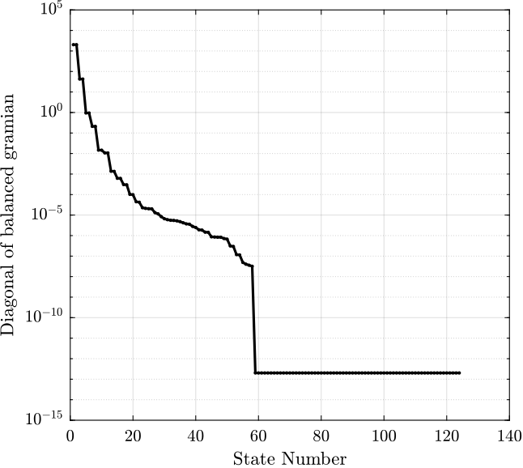
Figure 11: Sorted values of the Gramian of the balanced realization
Now we can choose the number of states to keep.
n_states_b = 10;
We now use modred to define reduced order oscillatory system using mathdc or truncate option.
MODRED Model simplification by state elimination.
RSYS = MODRED(SYS,ELIM) simplifies the state-space model SYS by discarding the states specified in the vector ELIM. The full state vector X is partitioned as X = [X1;X2] where Xr=X1 is the reduced state vector and X2 is discarded.
G_br = modred(G_b, n_states_b+1:size(A,1), 'truncate');
If needed, the rigid body mode should be added to the reduced system.
And other option is to specify the minimum value of the gramians diagonal elements for the modes to keep.
G_min = 1e-4; G_br = modred(G_b, G<G_min, 'truncate');
The obtained reduced dynamics is shown in Figure 12.
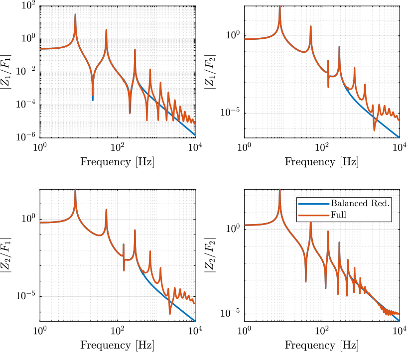
Figure 12: Balanced reduction on the MIMO system
3 Functions
3.1 extractMatrix: Extract Mass/Stiffness matrices
This Matlab function is accessible here.
Function description
function [M] = extractMatrix(filename) % extractMatrix - % % Syntax: [M] = extractMatrix(filename) % % Inputs: % - filename - relative or absolute path of the file that contains the Matrix % % Outputs: % - M - Matrix that is contained in the file
Optional Parameters
arguments
filename
end
Read the file
str = fileread(filename);
Extract the Matrix
str = regexprep(str,'\s+',''); parts = regexp(str, '\[(?<row>\d+),(?<col>\d+)\]:(?<val>[^\[]+)', 'names');
Get the number of column and rows
row = cellfun(@str2double, {parts.row}, 'UniformOutput', true);
col = cellfun(@str2double, {parts.col}, 'UniformOutput', true);
Get the values of the matrix
val = cellfun(@str2double, {parts.val}, 'UniformOutput', true);
Get the size of the matrix
sz = [max(row), max(col)];
Create the Matrix with the correct size
M = zeros(sz);
Get matrix position corresponding to the values.
ix = sub2ind(sz, row, col);
Finally, data are assigned.
M(ix)= val;
3.2 extractNodes: Extract Nodes positions and Interfaces DoFs
This Matlab function is accessible here.
Function description
function [int_xyz, int_i, n_xyz, n_i, nodes] = extractNodes(filename) % extractNodes - % % Syntax: [n_xyz, nodes] = extractNodes(filename) % % Inputs: % - filename - relative or absolute path of the file that contains the Matrix % % Outputs: % - n_xyz - % - nodes - table containing the node numbers and corresponding dof of the interfaced DoFs
Optional Parameters
arguments
filename
end
Read the file
fid = fopen(filename,'rt');
if fid == -1
error('Error opening the file');
end
Extract Nodes
n_xyz = []; % Contains nodes coordinates
n_i = []; % Contains nodes indices
while 1
% Read a line
nextline = fgetl(fid);
% End of the file
if ~isstr(nextline), break, end
% Line just before the list of nodes coordinates
if contains(nextline, 'NODE') && ...
contains(nextline, 'X') && ...
contains(nextline, 'Y') && ...
contains(nextline, 'Z')
while 1
nextline = fgetl(fid);
c = sscanf(nextline, ' %f');
if isempty(c), break, end
n_xyz = [n_xyz; c(2:end)'];
n_i = [n_i; c(1)];
end
end
% Line just before the list of node DOF
if contains(nextline, 'NODE DOF')
n_num = []; % Contains node numbers
n_dof = {}; % Contains node directions
while 1
nextline = fgetl(fid);
if nextline < 0, break, end
c = sscanf(nextline, ' %d %s');
if isempty(c), break, end
n_num = [n_num; c(1)];
n_dof{length(n_dof)+1} = char(c(2:end)');
end
nodes = table(n_num, string(n_dof'), 'VariableNames', {'node_i', 'node_dof'});
end
end
Close the file
fclose(fid);
Get XYZ coordinates of the interface nodes
int_i = unique(nodes.('node_i')); % indices of interface nodes
% Extract XYZ coordinates of only the interface nodes
int_xyz = n_xyz(logical(sum(n_i.*ones(1, length(int_i)) == int_i', 2)), :);
3.3 extractEigs: Extract Eigen Values and Eigen Vectors
This Matlab function is accessible here.
Function description
function [zm, w] = extractEigs(filename, args) % extractEigs - % % Syntax: [zm, w] = extractEigs(filename, args) % % Inputs: % - filename - relative or absolute path of the file that contains the eigenvectors and eigenvalues % - args - Optional parameters: % - dirs - [6 x 1] - ones(6,1) (default) % - Vectors with 0 and 1 identifying directions to include in the modal matrix % - This corresponds to [Ux, Uy, Uz, Rx, Ry, Rz] % - soft - 'ansys' (default) - Software used for the FEM % % Outputs: % - zm - [(n x dofs) x m] - Modal Matrix containing the eigenvectors % - zm(1:n, i) corresponds to the eigenvector for mode i and for first dir considered % - zm((n-1)*j+1:n*j, i) corresponds to the eigenvector for i'th mode and for j'th dir considered % - w - [m x 1] - Eigenvalues [Hz]
Optional Parameters
arguments
filename
args.dirs (6,1) double {mustBeNumericOrLogical} = ones(6,1)
args.soft char {mustBeMember(args.soft,{'ansys'})} = 'ansys'
end
Open the file
fid = fopen(filename,'rt');
if fid == -1
error('Error opening the file');
end
Extract Eigenvalues - Ansys
if strcmp(args.soft, 'ansys')
w = [];
zm = [];
while 1
% Read a line
nextline = fgetl(fid);
% End of the file
if ~isstr(nextline), break, end
% Lines containing the mode numbers
if contains(nextline, ' LOAD STEP=') && ...
contains(nextline, 'SUBSTEP=') && ...
~contains(nextline, 'CUM')
mode_num = sscanf(nextline, ' LOAD STEP= %*f SUBSTEP= %f ');
end
% Lines containing the frequency of the modes
if contains(nextline, 'FREQ=')
w = [w, sscanf(nextline, ' FREQ= %f LOAD CASE= %*f')];
end
% Start of the eigenvectors
if contains(nextline, 'ROTZ')
zmi = [];
% Read the eigenvectors for each of the nodes
while 1
nextline = fgetl(fid);
c = sscanf(nextline, ' %f');
if isempty(c), break, end
zmi = [zmi; c(2:end)'];
end
zm (:, :, mode_num) = zmi;
end
end
zm = reshape(zm(:, logical([0; args.dirs]), :), size(zm, 1)*sum(args.dirs), size(zm, 3));
end
Close the file
fclose(fid);
3.4 normalizeEigs: Normalize Eigen Vectors
This Matlab function is accessible here.
Function description
function [zn] = normalizeEigs(zm, args) % normalizeEigs - Normalize the eigenvectors % % Syntax: [zn] = normalizeEigs(zm, args) % % Inputs: % - zm - Modal Matrix % - args - Optional parameters: % - method - 'mass' (default), 'unity' - Method used to normalize the eigenvectors % % Outputs: % - zn - Normalized Modal Matrix
Optional Parameters
arguments
zm
args.m double {mustBeNumeric} = 0
args.method char {mustBeMember(args.method,{'mass', 'unity'})} = 'mass'
end
Normalize the Eigen Vectors - Mass Method
if strcmp(args.method, 'mass')
if size(args.m) ~= [size(zm,1), size(zm,1)]
error('The provided Mass matrix has not a compatible size with the Modal Matrix')
end
zn = zeros(size(zm));
for i = 1:size(zm,2)
zn(:,i) = zm(:,i)/sqrt(zm(:,i)'*args.m*zm(:,i));
end
end
Normalize the Eigen Vectors - Unity Method
if strcmp(args.method, 'unity') zn = zm./max(zm); end
3.5 reductionInOut: Reduce the Modal matrix to some nodes
This Matlab function is accessible here.
Function description
function [zr] = reductionInOut(zn, i_inputs, i_outputs) % reductionInOut - Reduce the Modal Matrix to only specified nodes corresponding to Inputs and Ouputs % % Syntax: [zr] = reductionInOut(zn, i_inputs, i_outputs) % % Inputs: % - zn - Normalized Modal Matrix % - i_inputs - Node indices corresponding to inputs % - i_outputs - Node indices corresponding to inputs % % Outputs: % - zr - Reduced Normalized Modal Matrix
Arguments
arguments
zn
i_inputs {mustBeInteger} = 0
i_outputs {mustBeInteger} = 0
end
Size Reduction
zr = zn([i_inputs, i_outputs], :);
3.6 computeModalDamping - Compute the Damping
This Matlab function is accessible here.
Function description
function [xi] = computeModalDaping(z, w, args) % computeModalDaping - % % Syntax: [xi] = computeModalDaping(z, w, args) % % Inputs: % - z, w, args - % % Outputs: % - xi -
Arguments
arguments end
3.7 sortModes - Sort Modes
This Matlab function is accessible here.
Function description
function [modes_i] = sortModes(z, w, xi, args) % sortModes - % % Syntax: [modes_i] = sortModes(z, w, xi, args) % % Inputs: % - z, w, xi, args - % % Outputs: % - modes_i - end
Arguments
arguments end
3.8 reduceModes - Get Modes numbers for the reduced model
This Matlab function is accessible here.
Function description
function [modes_i] = reduceModes(z, w, xi, args) % reduceModes - % % Syntax: [modes_i] = reduceModes(z, w, xi, args) % % Inputs: % - z, w, xi, args - % % Outputs: % - modes_i -
Arguments
arguments end
3.9 createStateSpaceModel - Create the Reduced State Space Model
This Matlab function is accessible here.
Function description
function [G] = createStateSpaceModel(z, w, xi, modes_i) % createStateSpaceModel - % % Syntax: [G] = createStateSpaceModel(z, w, xi, modes_i) % % Inputs: % - z, w, xi, modes_i - % % Outputs: % - G -
Arguments
arguments end
Bibliography
- [hatch00_vibrat_matlab_ansys] Hatch, Vibration simulation using MATLAB and ANSYS, CRC Press (2000).